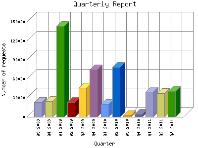

Analog 5.24
Analog 5.24 Report Magic for Analog 2.13
Report Magic for Analog 2.13The Quarterly Report shows total activity on your site for each quarter of a
year. Remember that each page hit can result in several server requests as the
images for each page are loaded.
Note: Most likely, the first and
last quarters will not represent a complete quarter's worth of data, resulting
in lower hits.

| Quarter | Number of requests | Percentage of the requests | |
|---|---|---|---|
| 1. | Q3 2011 | 40,623 | 7.28% |
| 2. | Q2 2011 | 37,358 | 6.70% |
| 3. | Q1 2011 | 39,613 | 7.10% |
| 4. | Q4 2010 | 4,380 | 0.79% |
| 5. | Q3 2010 | 2,366 | 0.42% |
| 6. | Q2 2010 | 78,348 | 14.3% |
| 7. | Q1 2010 | 20,011 | 3.59% |
| 8. | Q4 2009 | 74,806 | 13.40% |
| 9. | Q3 2009 | 45,699 | 8.19% |
| 10. | Q2 2009 | 23,305 | 4.18% |
| 11. | Q1 2009 | 143,282 | 25.67% |
| 12. | Q4 2008 | 25,120 | 4.50% |
| 13. | Q3 2008 | 23,376 | 4.19% |
Most active quarter Q1 2009 : 143,282 requests handled.
Quarterly average: 42945 requests handled.
This report was generated on August 28, 2011 02:33.
Report time frame August 1, 2008 06:00 to August 28, 2011 04:03.
| Web statistics report produced by: | |
| Analog 5.24 | Report Magic for Analog 2.13 |